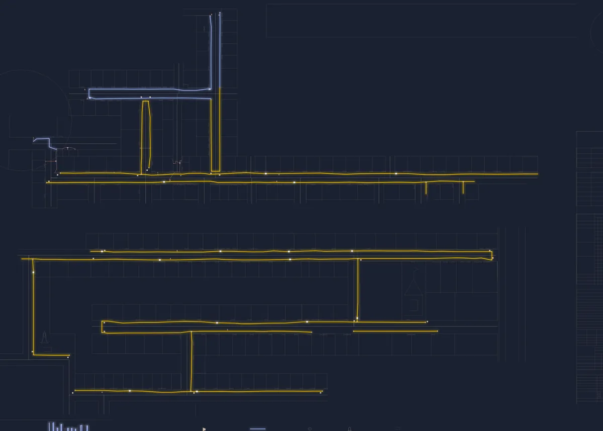

Home / About
A drawing office
in Dholpur
BKS Infralink is a small team of surveyors and CAD drafters who work on city gas distribution projects in and around Dholpur, Rajasthan.

When a gas company lays pipe through a colony, the work is not finished until it is on paper. The client needs to know exactly where each line runs, how deep it is, what size it is and how it was laid. Without that record the bill does not move, and the next crew to dig there has nothing to go on.
We started BKS Infralink to do that work properly. We walk the streets ourselves, take the measurements and GPS fixes, and draw every sheet in AutoCAD to the client's standard. Because we work locally, we can be back on site the same day when a reviewer has a question.
Where we've worked
Our sheets cover colonies across the Dholpur geographical area, including Anand Nagar, Jagdamba Colony, Mohan Colony, Mohan Nagar, Shastri Nagar, Ambedkar Nagar, Puran Vihar, Mittal Colony and the Gaushala area. We have prepared drawings for PE laying contractors working on the Dholpur city gas distribution network, reviewed by third-party inspection agencies.
How we work
- Measured, not tracedLengths come from the ground and are checked against what was issued, not scaled off an old map.
- One standard per clientWe match your client's title block, layers and legend so sheets pass review the first time.
- Quick revisionsComments are usually turned around within two working days.
- Private by defaultHousehold names and numbers on our sheets stay with you and your client. We never publish them.
Send us the area. We'll tell you the metres.
Share a colony name, a map pin or an old drawing. We reply with scope, timeline and price, usually within a day.
Get a quote